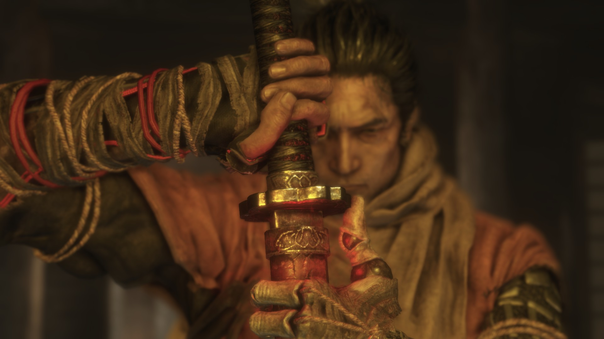
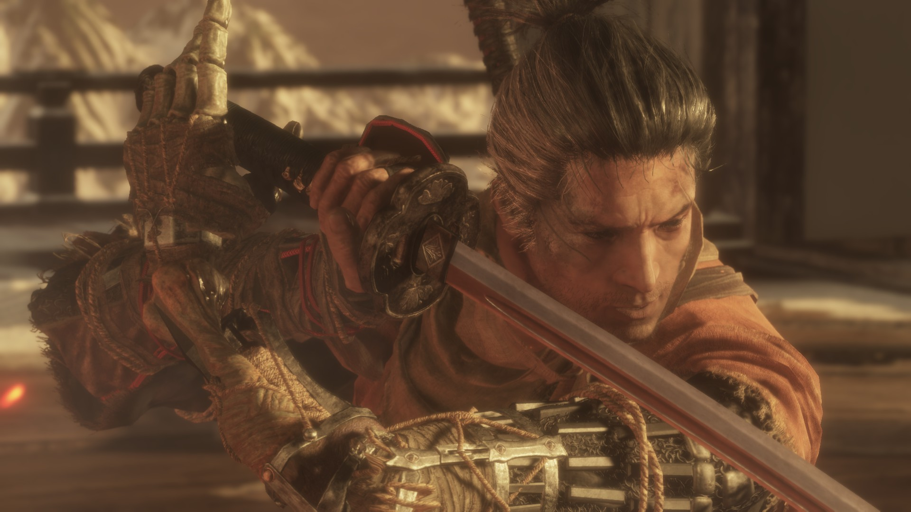

Overview

Sekiro: Shadow die twice is an action role-playing game produced by From software, the developer of the dark soul series. The story of the game takes place at the end of the 16th century in the Warring States period of Japan. Players will play the role of Ninja, perform tasks for their lords, and witness a world of constant bloodshed. The game takes the sword as the core of the fight, and then enhances the fight through various props and artificial arms.
Prosthetic Arms

In Sekiro: the shadow dies twice, the player will play the Ninja who losed his arm. He uses prosthetic arm as an alternative, but the effect is much more than his original arm. In addition to all kinds of equipment and props, the Ninja arm has its own skills, which can help the player to have more flexible fighting skills in the process of fighting. In most of the game experience, the prosthetic arm will play an important role in travelling. Through the hook lock hidden in the arm, players will experience the feeling of flying on the eaves and walking on the wall.
Shinobi Skills

In Sekiro: the shadow dies twice, the player will play the Ninja who losed his arm. He uses prosthetic arm as an alternative, but the effect is much more than his original arm. In addition to all kinds of equipment and props, the Ninja arm has its own skills, which can help the player to have more flexible fighting skills in the process of fighting. In most of the game experience, the prosthetic arm will play an important role in travelling. Through the hook lock hidden in the arm, players will experience the feeling of flying on the eaves and walking on the wall.